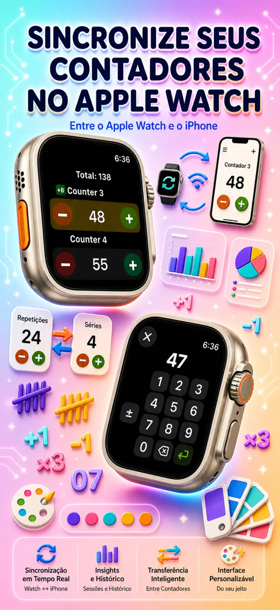
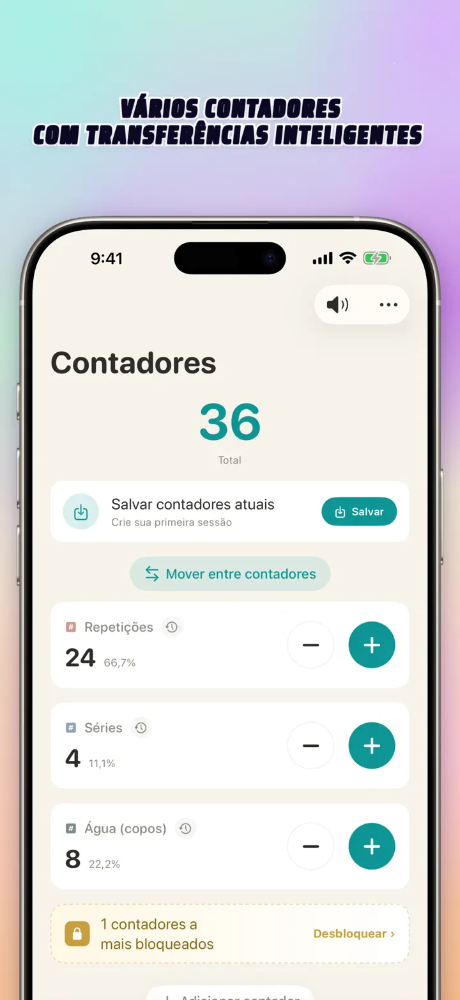
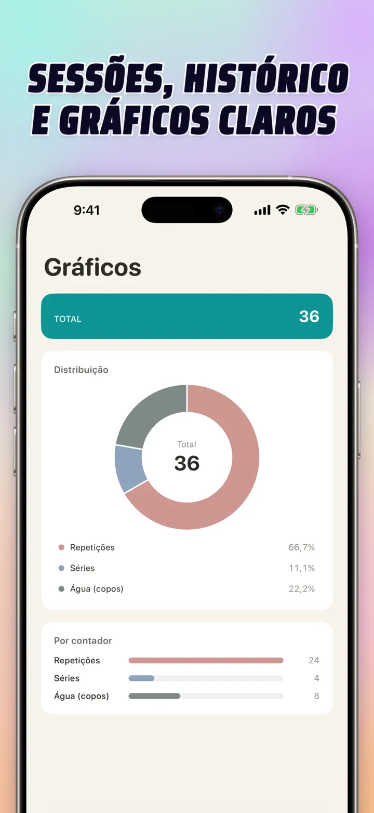
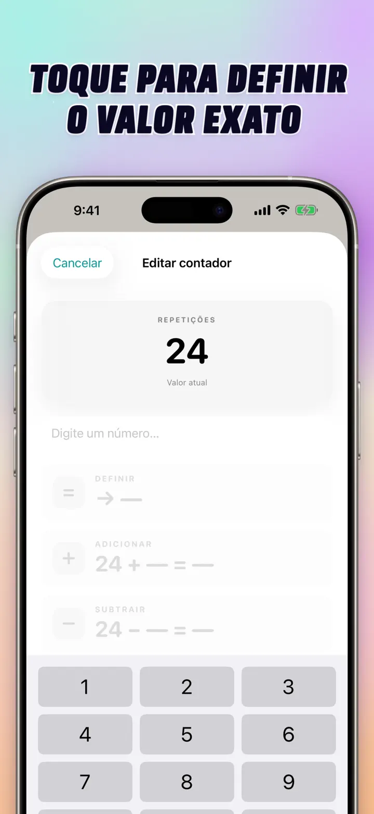
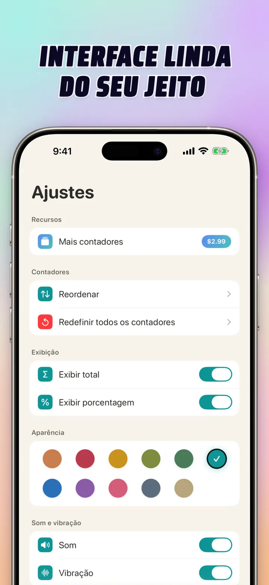
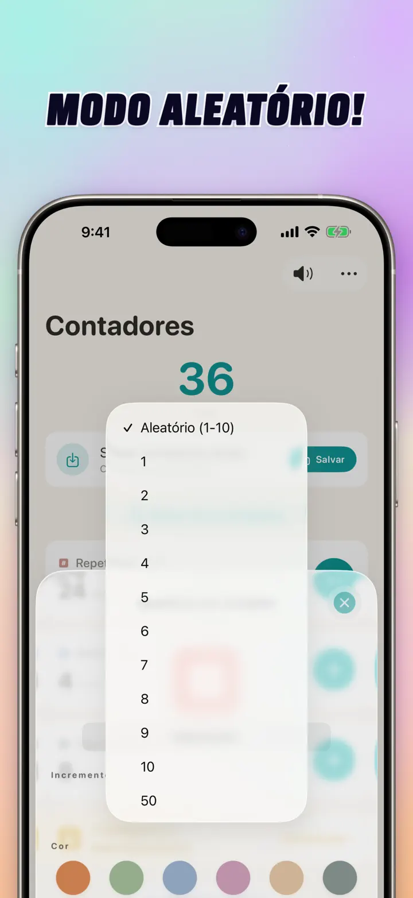

Contador 123
Sync Watch, toque e placar
Novo: widgets na Tela de Início — toque +/- no widget sem abrir o app. Contador e clicker com sync Apple Watch, modo aleatório, gráficos e histórico.
Baixar na App StoreSobre o app
Contador 123 é o contador rápido e flexível para iPhone, iPad e Apple Watch. Nomeie seus contadores, escolha uma cor e conte qualquer coisa — séries de treino, carreiras de tricô, terço, pontos em sala, inventário, placar de jogos. Tudo fica local no seu aparelho, sem conexão.
CONTADORES PERSONALIZADOS
- Crie contadores separados para atividades, jogos, rotinas ou listas
- Nome e cor personalizados para cada um
- Arraste para reordenar
- Toque longo para contar rapidamente em sequência
- Funciona 100% offline — sem cadastro, sem nuvem
ENTRADA DIRETA & AÇÕES EM LOTE
- Toque num contador para definir um valor inicial direto — sem zerar antes
- Adição/Subtração em lote: altere um contador por qualquer número em um toque
- Transferência: mova um valor de um contador para outro sem fazer operação dupla
- Incremento personalizado: um toque adiciona 1, 5, 10, 100 ou o que você preferir
- Prévia ao vivo de cada alteração
MODO ALEATÓRIO
- Deixe o contador sortear um novo valor de 1 a 10 a cada toque
- Some ou subtraia valores aleatórios com os botões + e -
- Útil para exercícios, jogos, recompensas, aulas e rotinas de prática
- Cada toque aleatório fica salvo no histórico do contador
TOTAIS & GRÁFICOS
- Total geral de todos os seus contadores
- Visão em porcentagem: quanto cada contador representa no total
- Gráfico de barras interativo — alterne entre valor (#) e porcentagem (%)
- Ordene por valor para ver o ranking na hora
HISTÓRICO & COMPARTILHAMENTO
- Histórico completo: cada incremento, decremento e edição registrados
- Salve e recarregue sets de contadores na hora
- Compartilhe configurações com amigos, alunos ou colegas de time
SYNC AO VIVO COM APPLE WATCH
- Atualize um contador no iPhone ou Apple Watch e os dois ficam sincronizados
- App nativo de verdade para watchOS — não é só um companion
- Nomes, cores e valores sincronizados no pulso
- Toque para contar, segure para repetir — direto do relógio
- Funciona sozinho mesmo com o celular longe
PARA iPhone, iPad & APPLE WATCH
- Layouts adaptáveis para qualquer tamanho de tela
- iPad mostra mais contadores ao mesmo tempo, com Split View
- Privacidade em primeiro lugar: tudo local, sem nuvem, sem conta
IDEAL PARA
- Séries e repetições de academia
- Carreiras de tricô e pontos de crochê
- Terço, tasbih e orações
- Pontos em sala e chamada de alunos
- Futebol, vôlei, handebol — placar rápido
- Tênis de mesa e vôlei de praia
- Inventário e contagem de estoque
- Jogos de tabuleiro, baralho, truco, uno
- Voltas de piscina e raias
- Observação de aves
- Contagem de pessoas em eventos
- Tracking de hábitos e metas diárias
Baixe Contador 123 e facilite todas as contagens — claro, rápido, privado.
Política de Privacidade: https://masawata.net/privacy-policy.html Termos de uso: https://www.apple.com/legal/internet-services/itunes/dev/stdeula/
Capturas de tela






Contador 123
Novo: widgets na Tela de Início — toque +/- no widget sem abrir o app. Contador e clicker com sync Apple Watch, modo aleatório, gráficos e histórico.
Baixar na App Store